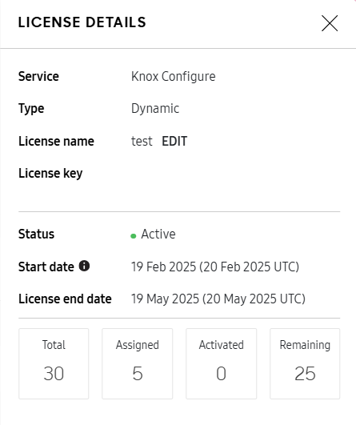

Manage licenses
Last updated June 26th, 2024
You must purchase a license to use Knox Configure. As with other Knox licenses, you can request a Knox Configure license from the sales team in your country. Once purchased, you enter their license on the Knox Configure console. A license is applied and activated automatically when a device is accepted into Knox Configure.
When a Knox Configure license expires, the devices mapped to the expired license are automatically released from Knox Configure management control.
License utilization is global, and not restricted by regional device deployment constraints. Once you’ve uploaded your purchased devices to Knox Configure, you need to create a configuration profile and select a license to ensure a Samsung Knox-compliant deployment.
Two following license types are available for utilization with Knox Configure:
For new customers, Knox Configure currently only supports the license types mentioned below. However, if you’re actively using a legacy Knox Configure license, your legacy license will continue to be supported.
- Trial license — Trial licenses are intended for development and testing before going live with your deployment. Trial licenses are valid for 3 months and cannot exceed 30 devices for either Setup or Dynamic edition Knox Configure profile usage. Trial licenses can be migrated to commercial licenses upon expiration by contacting your reseller.
- Commercial license — Use a commercial license when deploying devices for commercial use with either a Setup or Dynamic Knox Configure profile. Commercial licenses must be purchased from a Knox reseller supporting your geographic deployment region.
A Per Device license is the standard license type for the Setup and Dynamic editions of Knox Configure. Per Device licenses include a finite number of non-transferable seats, which means that once a device has been assigned with this license type, the seat can’t be reassigned. Per device licenses also have uniform scheduling, so all devices assigned with this license type expire on the same date.
A Setup edition Per Device (Staggered) license enables you to utilize licenses more efficiently, since you may not initially use Knox Configure after purchase or deploy all of your devices at the same time. Using a Per Device (Staggered) license type, you create a Setup edition profile and assign devices as usual. However, you then select the Per Device (Staggered) license type and ensure each activated device has a different expiration date based on the device’s activation date.
A Dynamic edition Per Seat license enable you to revoke a license on one device to use the license, per seat, on another device with the same Dynamic edition profile. For example, you may want to revoke an ex-employee’s license so you can utilize that revoked license on a different device using that same Dynamic edition profile. Utilizing the revoked license increases the available license count and improves license provisioning efficiency with the Dynamic edition profile.
The following chart compares the different license types for each edition of Knox Configure:
| Setup Edition | Dynamic Edition | |||
|---|---|---|---|---|
| License name | Setup Edition | Setup Edition (Staggered) | Dynamic Edition | Dynamic Edition (Per Seat) |
| License type | Per Device | Per Device (Staggered) | Per Device | Per Seat |
| Valid license period | All device licenses expire at the same time | License period guaranteed per each device | All device licenses expire at the same time | |
| Transferable? | No | Yes | ||
| License extension | Available | Not available | Available | |
| Increase/decrease number of devices during license period | Increase only | Increase and decrease | ||
A profile and an assigned license are now no longer linked, and each device follows the behavior of the license types they belong to. Legacy SKUs and new license SKUs can now be used together in the same profile. If necessary, a profile can be created and saved without a license assignment.
To review existing licenses:
-
Select Licenses from the left-hand navigation menu.
Devices don’t consume new license seats when re-assigned to profiles that use the same license. However, devices need to be manually selected within the Knox Configure console and re-assigned the license. Therefore, you can re-assign an unassigned device to a profile and re-use a renewed license without consuming additional license seats.
-
Review the following license utilization information to assess whether an existing license can be used:
- LICENSE NAME — Lists the name assigned to license upon creation or edit. The name displays as a link that can selected to review license data in greater detail. For more information, see License details.
- SERVICE/TYPE — Lists the type of license purchased. License types can be filtered as needed to display a particular type, including Setup Trial, Setup Commercial, Setup (Staggered) Trial, Setup (Staggered), Dynamic Trial, Dynamic Commercial, Dynamic (per seat) Trial, Dynamic (per seat), Dynamic Enterprise, Custom SDK, and Custom SDK (KLM). A single profile can have multiple devices using it, with each device potentially using a different license type. Select CLEAR FILTER as needed to reset the filtering preferences.
- STATUS — Displays the Active, Registered, or Expired status of each listed license. Select CLEAR FILTER as needed to reset the filtering preferences.
- TOTAL — Displays the total number of license seats associated with the license.
- REMAINING — Displays the unused number of license seats associated with the license. Licenses with no remaining seats are displayed on the Licenses screen, but not in the profile creation flow when selecting a license to assign to a profile.
- ASSIGNED — Lists the number of devices that are currently assigned a profile but that haven’t yet been activated or rebranded. Click a link in the Assigned column associated with the Knox Configure Setup or Dynamic licenses to open the Devices page and view a filtered list of devices with their device IDs and profile assignments.
- ACTIVATED — Lists the number of devices or accessories that have been activated for use. Click a link in the Assigned column associated with the Knox Configure Setup or Dynamic licenses to open the Devices page and view a filtered list of devices with their device IDs and profile assignments. Similarly, click a link in the Activated column associated with the Knox Configure Accessory license to open the Accessories tab on the Devices page and view a filtered list of accessories with their accessory IDs, type, the linked accessory profile, and the number of linked devices.
- END DATE — Displays the end date when license seats can no longer be assigned and activated under the terms of this license. When a license reaches its activation end date, the assigned count matches the number of remaining devices assigned profiles. When a license activation end date changes, a console notification informs of the new activation end date.
Setup and Dynamic licenses
License type Device scenario Number of Activated seats Filtered list of Activated devices All Setup licenses, Dynamic per device Device is 1. assigned, 2. configured, 3. unassigned Same Same All Setup licenses, Dynamic per device Device is deleted Same Device is now under Deleted list Dynamic per seat Device is 1. assigned, 2. configured, 3. unassigned Decreases Device is now under Deleted list Accessory (Staggered) license
License type Accessory or device scenario Number of Activated seats Filtered list of Activated devices Accessory license Device is 1. assigned, 2. configured, 3. unassigned Same Same Accessories can't be deleted from the Accessories tab on the Devices page. N/A N/A -
Having reviewed the contents of the License screen, either use an existing listed license, Get a license, or Enter a license key.
License details
A listed license can be selected to reviewed in greater detail.
To review license details:
-
Select Licenses from the left-hand navigation menu.
-
Refer to the LICENSE NAME column and select the link of an existing license to review it in greater detail.

-
The License details screen displays the following:
- License Name — Lists the name assigned to license upon creation. The name can be edited if need be. The right side of the screen displays whether this selected license is currently active, registered, or expired.
- Seats — Displays the number of seats purchased with this selected license. If needed, contact your reseller to increase the number of seats. The number of remaining seats also displays along with the number both assigned and activated with a device and its profile.
- License Key — Displays the License Key used as a unique alphanumeric code to activate this specific license. Before you enter a Commercial key you should ensure the Trial key is deleted.
- Type — Displays whether the selected license is a Setup/Dynamic Trial or Commercial license. Trial licenses are temporary and subject to expiration upon the Activation End Date. Commercial licenses are perpetual and not subject to expiration. Trial licenses can also be deleted from the Knox Configure console when they are no longer required for device testing. A single profile can have multiple devices using it, with each device potentially using a different license type.
- Owner — Lists the owner email address of the enterprise using Knox Configure to configure and deploy devices using this license.
- Activation Start Date — Defines the beginning date and time a license can be activated for device license seat allocation. The Activation Start Date begins the expiration countdown of a trial license activation period.
- Activation End Date — Lists the end date of the license seat activation period under the terms of this selected license. When a license reaches its activation end date, the assigned count matches the number of remaining devices assigned profiles. After this date, this license cannot be used to assign or activate additional devices. Devices that have already been activated with this license can remain active for the remainder activation period.
- Activation Period — Lists the activation duration period for the selected license.
-
Select OK if needed to save the updates to the License Name and return to the Licenses screen.
Get a license
To obtain a Trial or Commercial license:
-
On the console, click Licenses.
-
Click Actions > Get a License.
-
Select a license and click Generate Trial license. These licenses enable you to leverage the features of either the Setup, Dynamic, or Accessory profile.
-
Click Find reseller to search for a Samsung-approved reseller in a specific geographic region that supports the Knox Configure edition you selected.
Enter a license key
To enter a license key in order to add a license to a profile:
-
Within Knox Configure, select Licenses from the left-hand navigation menu.
-
If you don’t already have a license, select the GET A LICENSE button from the top, right-hand side, of the screen.
- To test your profiles, select Dynamic or Setup and select GENERATE TRIAL LICENSE.
- To deploy profiles to your users, select FIND RESELLER to purchase a production license from a reseller in your geographic region.
-
If you already have a license, select the ENTER LICENSE KEY button from the top, right-hand side, of the screen.
-
Enter a License name and License key. The license name is just a label for the license key, it does not impact the license functionality in any way. The license name must be unique to any other license name used with your specific deployment.
-
Click ADD.
License expiry
Per Device, Per Device (Staggered), and Per Seat licenses all include a 30-day grace period to accommodate license renewal delays. During the grace period, you can’t reboot, factory reset, or push profile updates and lock/unlock commands to associated devices. Any previously scheduled pushes will also fail.
After the 30-day grace period, device behavior depends on the license the device was set up with:
- Per Device and Per Device (Staggered) — The device is automatically unassigned, but all policies added to the device remain on the device. Device policies remain active until the device undergoes a factory reset or its profile is synced.
- Per Seat — The device is automatically unassigned and all policies are revoked, which removes all restrictions from the device. All content, apps, and non-restrictive configurations such as boot animations and hardware key remaps remain on the device after the device is unassigned.
A device can be unassigned from its assigned profile when the device is using a staggered license, and the service period has ended, or when the device is using a non-staggered license, and the 30-day license expiration grace period has ended.
Licenses that were terminated 5 or more years ago are deleted from the Knox cloud service database. If these licenses are assigned to devices, the devices are unenrolled before they’re deleted, and any device information associated with those licenses is also deleted.
Replace a license
Complete the following steps if you are:
- Switching all devices on one license to another (useful when replacing licenses that are about to expire)
- Select the license you would like to replace.
- On the Licenses screen, select Replace license.
- Select the new license to replace the previous license.
Switch configured devices to a different license
Complete the following steps if you are:
- Switching from a trial license to a commercial license
- Switching from a commercial license to a different commercial license
-
From within the Licenses screen, select the ENTER LICENSE KEY button. Add the new license key to the list of available licenses.
-
Select the name of the profile to utilize with your devices.
If configuring the device to the same profile it used previously, you will need to clone the profile, as it is not possible to change licenses using the same profile. To clone a profile, navigate to the Profiles screen and select the checkbox beside the profile name you would like to clone. Select Clone to edit from the ACTIONS drop-down menu.
-
Navigate to the Profiles screen and select specific devices. Select Assign devices from the ACTIONS drop-menu.
-
From the Select devices screen, select the devices you want to assign. If you cannot find a particular device, ensure you are not filtering the devices by status.
-
Select the ASSIGN button once all the devices you intend to assign are selected.
-
Select NO when the Change assigned profile screen prompts whether you want to continue using the existing license.
Knox Deployment App license utilization
You can also assign for use with the Knox Deployment App while you create or edit a profile on the Enrollment info page. You can only designate one license at a time for the Knox Deployment App, so if the license is consumed or expired, you’ll need to assign another one.
If there are no licenses listed in the License menu, click + Enter License Key and enter your license details. You can now select the newly created license for use with the Knox Deployment App.
The License menu includes both active licenses with remaining seats and licenses that have yet to start. If you select a license that has yet to start, you’ll see an error message that warns you not to use this license and instead select an active license with seats remaining.
On this page
Is this page helpful?